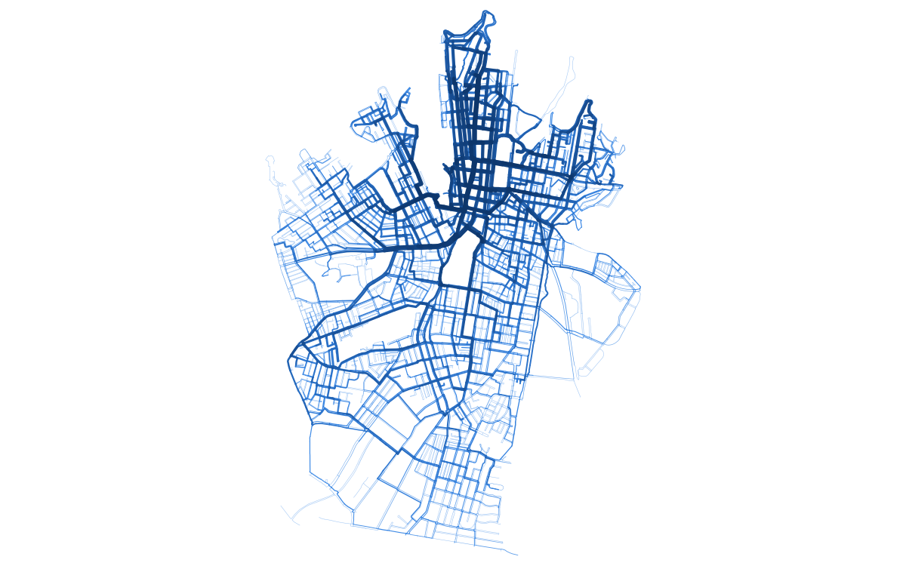
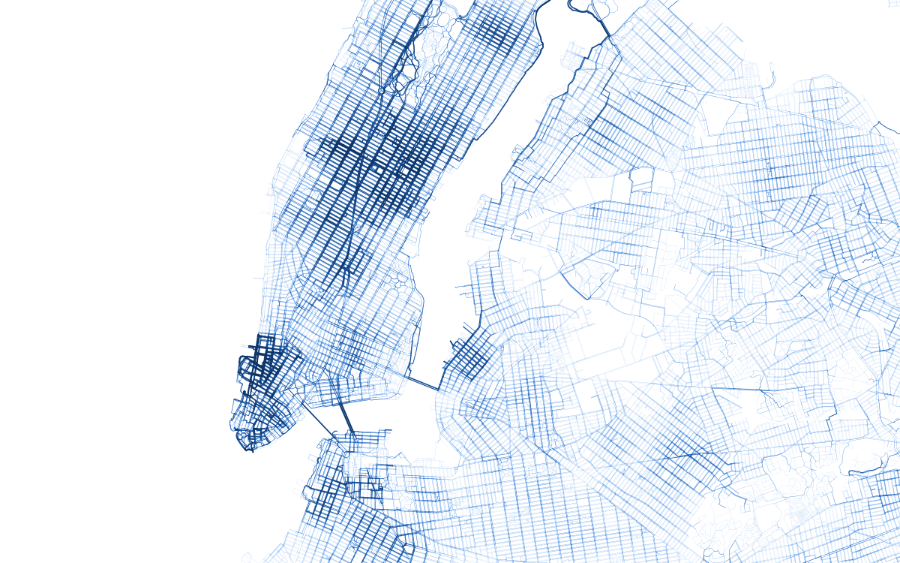

StePNet demo: city-wide pedestrian flows
Estimated walking volumes on every sidewalk link in Sydney and New York. Origin–destination demand is inferred with models transferred from a source city, assigned to the pedestrian network with a stochastic route choice model, and calibrated to local pedestrian counts.

Sydney
Pedestrians per weekday on 13,291 links. Calibrated to City of Sydney counts, autumn 2025.
- Calibration R²
- 0.80 (113 sites)
- Validation R²
- 0.38

New York
Pedestrians in the AM, midday and PM peak hours on 311,041 links. Calibrated to NYC DOT counts, 2018–19.
- Calibration R²
- 0.79–0.81 (1,009 sites)
- Validation R²
- 0.59–0.64
Validation: each count site predicted with its own count left out (random 20% splits). Method from StePNet. Nourmohammadi, Rashidi & Saberi (2026), npj Sustain. Mobil. Transp. 3, 65.